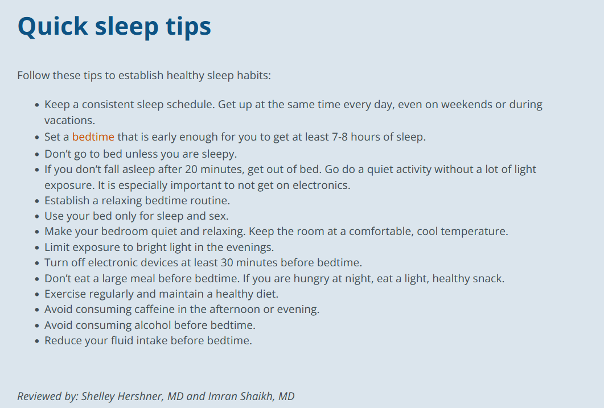

Most days I find myself achingly exhausted, nodding off in every lecture, bus ride, and study session. I wake up every morning in a startled haze, drifting soberly through my morning routine. After becoming increasingly concerned about my poor levels of daytime alertness, I decided to see if my nighttime sleep may be the main cause of the issue. I conducted extensive research and read numerous testimonials on other people with the same issues as I, and was quickly directed to a list people swear by: the sleepeducation.org’s healthy sleep habits.
It is widely known and discussed that your lifestyle is your biggest contributor to your health. Daily habits build upon each other, creating your overall condition as the sum of the many parts that you decide for yourself. Everything is connected to each other; the way you eat affects the way you sleep, as well as the way you are able to exercise, socialize, and think in one flowing, interconnecting loop. Knowing that it takes time for routines to set in and my body to adjust, I gave myself two weeks of strict adherence to these tips to see if my daytime exhaustion improved. The sleep tips look daunting, having many rules and suggestions that seem to make your life more difficult instead of being a positive contributor. However, this can be alleviated by breaking them down and grouping some tasks together into a more manageable, digestible lifestyle.
Keeping a consistent sleep schedule was easy enough as many of my classes are scheduled for the same time every morning. On weekends or days where I don’t have an early class, I was still committed to waking up early in order to hone my circadian rhythm. Getting to bed at a consistent time was marginally more difficult as it required much more discipline on my part. The temptation as a college student, to push your work to the last minute and spend a late night furiously finishing work is palpable, but for the sake of this experiment, I elected to finish my work during the daylight hours. For those of you who live with a partner or a roommate, it may be more difficult to follow this step as you can’t expect them to adjust their habits around your lifestyle. I recommend purchasing a pack of cheap foam earplugs as well as a sleep mask so that you are able to go to bed at any time you need while your roommate can continue their life unbothered by your weird sleep experiments.
I was also easily able to establish a bedtime routine because of the nature of my already existing one. For me, getting ready for bed includes washing my makeup off and beginning my skincare routine, an inherently relaxing activity in itself. The only tweak I made to my routine was to put my phone away to charge, focusing on the act of getting ready itself instead of conflating my attention to other matters and fulfilling the 30 minutes of no screen time rule at the same time.
As far as daytime activities to help your nighttime sleep go, many were simple to follow. I stopped drinking caffeine around noon each day, letting my body’s natural melatonin receptors work as intended. I also don’t usually use my bed for anything other than sleeping as much of my work or studying occurs at my desk in the opposite corner of my room. I also started eating better food, earlier in the day as recommended as well as reduced my fluid intake which was a little odd to me. I guess it worked. Adding exercise to my routine was also not a problem as it is a preexisting habit to me, especially with all the steps I get in from living on such a spread-out, walkable campus.
However, some of these tips were difficult to follow or seemed unreasonable, at least for someone of my lifestyle. The tips recommend not going to sleep unless you were sleepy, but also to keep a consistent bedtime which seems contradictory in nature. Thinking about it further, if your circadian rhythm is as competent as it is supposed to be, you should be feeling sleepy during your regular bedtime, especially if you follow appropriate sleeping habits. Additionally, one tip recommends getting out of bed and doing a quiet activity if you cannot sleep within 20 minutes. I really wonder how they want us to measure 20 minutes passing if we aren’t allowed any electronic devices, and if the room should be dark enough to not be able to make out any hands on the clock. It is also extremely difficult to limit exposure to bright lights in the evening. I study until bedtime so I am at constant exposure to overhead light, bluelight from my laptop, or the light from my desk lamp. My final point of criticism is arguably moot. If you’re not supposed to drink alcohol before bed, when else would you? Alcohol makes you sleepy. Are they advocating a day-drinker lifestyle?
My final word of advice after gaining firsthand experience through weeks of experimentation is to follow these tips at your own discretion. The single worst thing you can do for your sleep is be anxious about the quality and quantity you are receiving. This makes it incredibly difficult to fall asleep and stay asleep. Additionally, many of these tips are mood killers that you don’t have to stick to every single day to get a good enough sleep. A day or two of messing around with your friends late at night with a bottle of alcohol won’t ruin your sleep for the following months. You know how well your body works and at what conditions it works best in. The amount of sleep you need and your bedtime will definitely vary from person to person. Seven hours of sleep may be enough for one person, but if you’re unlucky enough to be me, you might need nine at minimum. These tips largely did help improve my sleep quality, especially after I figured that crucial detail out. It brought better mornings, heightened alertness, and eliminated the midday slump I would experience.